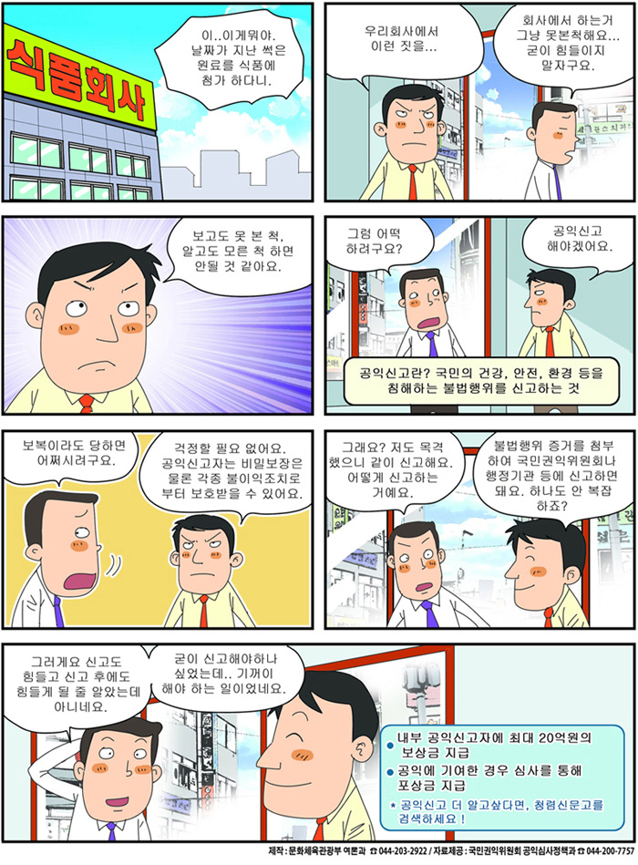

공익신고자 보호제도 안내
공익신고자 보호제도 안내

공익신고자 보호제도 안내 만화로 제공
- A : 이.. 이게뭐야 날짜가 지난 썩은 원료를 사용해 참가 하다니.
- A : 우리회사에서 이런짓을... B : 회사에서 하는거 그냥 못본척해요... 굳이 힘들이지 말자구요.
- A : 보고도 못 본 척. 알고도 모른 척 하면 안될 것 같아요.
- B : 그럼 어떡 하려구요? A : 공익신고 해야겠어요. 설명 : 공익신고란? 국민의 건강, 안전, 환경 등을 침해하는 불법행위를 신고하는 것
- B : 보복이라도 당하면 어쩌시려구요. A : 걱정할 필요 없어요. 공익신고자는 비밀보장은 물론 각종 불이익조치로부터 보호받을 수 있어요.
- B : 그래요? 저도 목격했으니 같이 신고해요. 어떻게 신고하는 거예요. A : 불법행위 증거를 첨부 하여 국민권익위원회나 행정기관 등에 신고하면 돼요. 하나도 안 복잡하죠?
-
B : 그러게요 신고도 힘들고 신고 후에도 힘들게 될 줄 알았는데 아니네요. 굳이 신고해야하나 싶었는데.. 기꺼이 해야 하는 일이었네요.
공익신고자 보호 제도 안내 설명
- 내부 공익신고자에 최대 20억원의 보상금 지급
- 공익에 기여한 경우 심사를 통해 포상금 지급
공익신고 더 알고싶다면. 청렴신문고를 검색하세요!